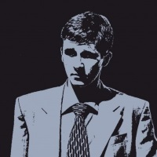

Навыки:
Машинное обучение, Глубинное обучение, Математическая статистика
Python (pandas, scikit-learn, keras, statsmodels), R (data.table, caret, forecast), MATLAB (Math, Statistics, and Optimization), C++ (stl, boost), Java (postgreSQL, mongoDB, rabbitMQ), Javascript (JQuery), Docker, Git.